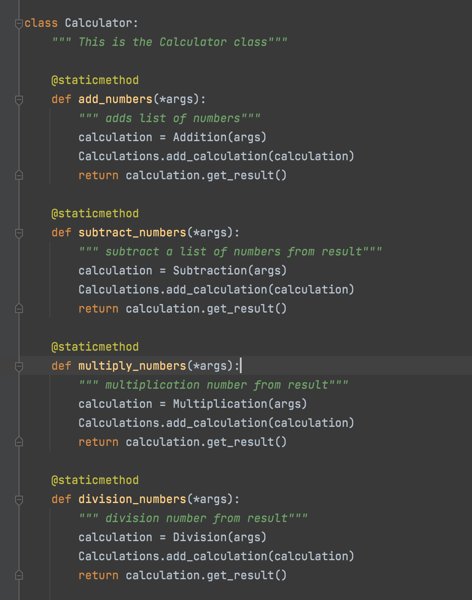
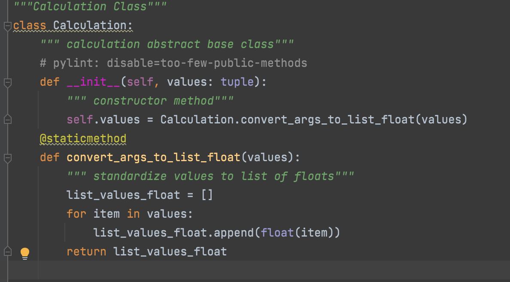
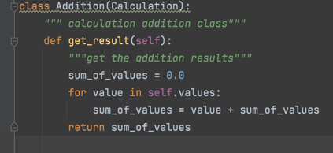
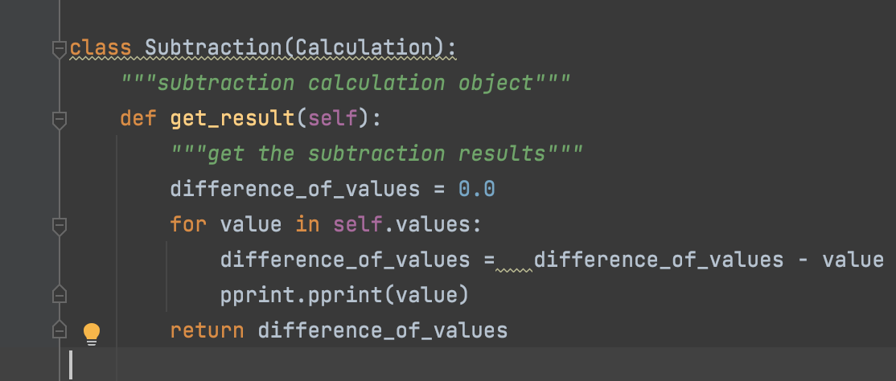
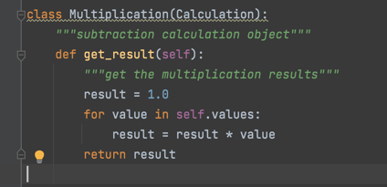
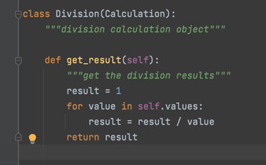

OOP Calculator Example
Now let's look at how a calculator program embodies the idea of object-oriented programming.
We have a calculator program, which has the most basic function: addition, subtraction, multiplication and division. In division, it throws an exception if the divisor is 0.
- Abstraction
- Encapsulation
- Inheritance
- Polymorphism
We abstract the calculator into four functions of addition, subtraction, multiplication and division, which itself reflects this idea.
When using calculator functions, or when creating new subclasses, we don't need to care about how the parent class is implemented. When calling other classes, you don't have to worry about the specific implementation of other classes. Everything is encapsulated.
For example, when the calculator uses addition, there is no plus sign in the following code.
For example, calculator class inherits convert in calculation class_ args_ to_ list_ float method. Imagine that this is a long bar shaped input box that defines the calculator.
Addition, subtraction, multiplication and division are all from calculation class, which is equivalent to the four children of calculation. However, it is obvious that they have different functions: addition, subtraction, multiplication and division.
   